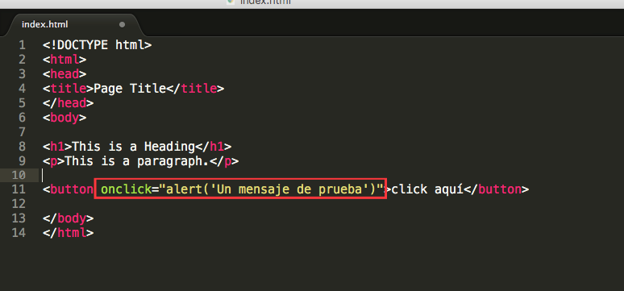
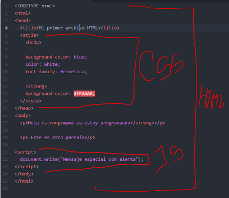
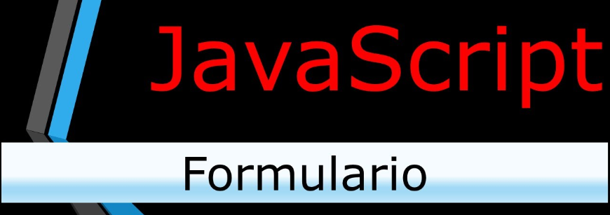

HTML
Sintaxis flexible en poner restricciones
en la forma de escribir etiquetas
atributos y valores
Los documentos se muestran aunque contengan
errores sintácticos
Puede haber texto no incluido a una etiqueta
No es necesario poner los atributos o
elementos en mayúsculas o minúsculas
Las referencias a entidades en hexadecimal
se pueden escribir en mayúsculas o minúsculas
No es necesario incluir ninguna sección
Puede no tener el único elemento raíz
No es necesario cerrar todo lo que se abre
No es necesario si no hay espacios en blanco
|
XHTML
Sintaxis muy estricta en el sentido de imponer restricciones
en la forma de escribir etiquetas, atributos o valores
Para que un documento se muestre tiene que ser bien
formado y cumplir con todas las reglas sintácticas
No puede haber texto no incluido en alguna etiqueta
Los nombres de los elementos y atributos deben
escribirse en minúsculas
Las referencias a entidades en hexadecimal deben escribirse en
minúsculas
Para evitar problemas con los carácteres "<" y "&"
el código JavaScript (y estilo) se suele incluir
en seceuncias CDATA
Tienen que tener los documentos un único elemento
raíz de todo el documento del elementos
Todo lo que abra tiene que cerrarse
Los valores de los atributos debe escribirse
entre comillas (dobles o simples)
|
XML
Enfocado en la organización
Permite separar contenido y presentación
Se desarrolló en 1996
Permite definir etiquetas personalizadas
para descripción y organización de datos
Noes sustituido en HTML
Es basado en texto
Usado para visuar el contenido como una página
que descarga a pdf por ejemplo
Es de poca complegidad pero mucho potencial
Es extricto en mayúsculas y minúsculas
|
Da click para obtener mayor información
Da click para aprender con un video
Muchos de nosotros que de una u otra manera tenemos relación con la programación, alguna vez nos hemos chocado con estos conceptos, sin tener la idea de que son y a que se dedican individualmente. Esto ocurre muy a menudo y nos hemos preguntado. ¿Cual es la diferencia entre html, css, Javascript?.

HTML: Es la forma como se organiza o se estructura la información en una página web. Es la que ordena todo el contenido desde la ubicación del título hasta los pié de página.
CSS: Es el lenguaje con el que puedes crear estilos al contenido de la página, de esta manera la página no se verá como letras una encima de la otra, sino con cuadros, estilos, diagramas y demás cosas agradables ante el ojo humano, que la hace ser atractiva.
JavaScript: Este lenguaje te permite crear una interactividad con el usuario que está visitando tu página, donde puedes pedir datos, vistas dinámicas, pregunta y respuesta y demás.
Aunque estos tres lenguajes se dedican a diferentes cosas, lo hacen para un fin común, el cual es crear una página web dinámica e interactiva.
Estos lenguajes pueden escribirse en un solo archivo y el navegador los interpretara cada uno por separado, uniendo e interpretándolo.

CSS es un lenguaje utilizado en la presentación de documentos HTML. Un documento HTML viene siendo coloquialmente “una página web”. Entonces podemos decir que el lenguaje CSS sirve para organizar la presentación y aspecto de una página web. Este lenguaje es principalmente utilizado por parte de los navegadores web de internet y por los programadores web informáticos para elegir multitud de opciones de presentación como colores, tipos y tamaños de letra, etc.
JavaScript es un lenguaje de programación, al igual que PHP, si bien tiene diferencias importantes con éste. JavaScript se utiliza principalmente del lado del cliente (es decir, se ejecuta en nuestro ordenador, no en el servidor) permitiendo crear efectos atractivos y dinámicos en las páginas web. Los navegadores modernos interpretan el código JavaScript integrado en las páginas web.


Para entender lo que es JavaScript consideremos lo siguiente. Un usuario escribe una dirección web en su navegador, por ejemplo http://www.aprenderaprogramar.com. El servidor recibe la petición y como respuesta a esa petición envía al ordenador del usuario código HTML junto a código JavaScript. El código HTML se encarga de que en la pantalla se muestre algo, por ejemplo una imagen, un menú, etc. El código JavaScript se puede encargar de crear efectos dinámicos en respuesta a acciones del usuario, por ejemplo que se despliegue un menú tipo acordeón cuando el usuario pasa el ratón por encima de un elemento del menú.
Fuentes.
https://www.aprenderaprogramar.com.
https://www.ejemplode.com.
https://grupo4herramientasinformatica.blogspot.com.
https://www.spip.net/es_article2262.html.